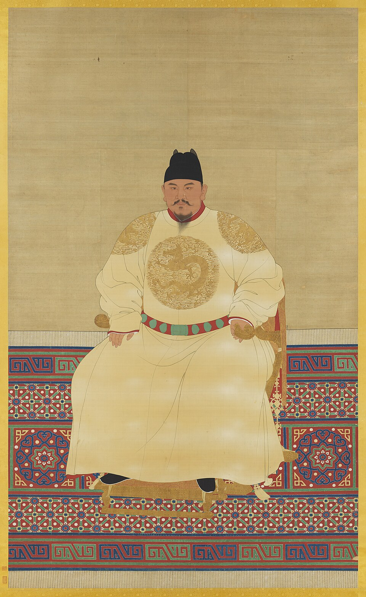

明
明史网站 · 设计系统
D1 tokens × D3 组件 · 实况渲染（数据均为真实内容）
C7 时间锚（定位模式：你在这里 · 永乐）
十六朝按 B1–B9 阶段色带着色；点击即跳转该朝模块视图（列表页为筛选模式）
C1 三层阅读 + C2 术语 + C3 史料标
一句话结论：废丞相后，明代中枢决策形成「内阁票拟—司礼监批红」的双轨制，皇帝理论上只需画圈。①
永乐初设内阁时，它只是皇帝的顾问班子；到宣德、正统年间，票拟制度化，内阁取得了代拟批答的权力；与此同时宣宗设内书堂教小宦官读书，为日后司礼监代行批红埋下伏笔①③。
从此，章奏先由内阁拟出处理意见贴在票签上，再由皇帝（或其代理者）朱笔照批或改驳。谁控制了这两个环节，谁就控制了朝政——刘瑾、张居正、魏忠贤的权势，本质上都是对这两个环节的占用。①
深读与考据（3 条）
① 票拟的确切形成时间诸说不一（宣德说/正统说），本站取「宣德—正统间制度化」表述③；② 「批红」在永乐朝已有宦官代笔实例，但制度化在内书堂之后②；③ 王天有对票拟—批红流程的复原详见《明代国家机构研究》③。
C3 史料等级标
① 正史官修 ·
② 当时人著述 ·
③ 现代研究 ·
④ 传闻野史
四级标为全站史实的信任链标识；④级内容只进「误区辨析」与「当代接受」框，不入正文叙述。
C5 误区辨析框 / C6 考据框
⚠常见误传
「土木堡之变明军五十万大军覆没」——五十万为号称，学界通行估计实约二十余万；阵亡文武大臣数十员的说法依据《明史》本纪与私史互证。①③
🔍考据 · 诸说并列
建文帝下落：①焚死说——《明史·恭闵帝纪》「宫中火起，帝不知所终」官修存疑笔法①；②出亡说——《明史纪事本末》载逊国诸臣随行，万历间张居正对神宗亦言之②。本站并存两说，不作独断；详见皇帝页专考。
C10 图注卡（manifest 驱动）

明太祖坐像（正形）Public Domain
台北故宫博物院藏 · via Wikimedia Commons
图像库 id: emperor-hongwu · 署名数据源 assets/images/manifest.json
每张站内配图由 manifest.json 自动生成图注：题名、藏地、许可徽标、来源链接。PD 图标藏地，CC 图标作者与许可链接，自绘图标「本站绘制」。缺像帝王（建文、景泰）显示线描占位与「无存世官方像」说明，不用近似像顶替。
暗色模式
本页已挂 tokens.css：跟随系统 prefers-color-scheme 自动切换墨色模式（token 语义变量驱动，无组件写死色值）。